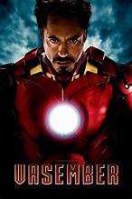

რკინის კაცი

iron Man არის სუპერგმირი, რომელიც ჩნდება Marvel Comics-ის მიერ გამოცემულ ამერიკულ კომიქსებში. მწერლისა და რედაქტორის სტენ ლის მიერ შექმნილი, სცენარისტის ლარი ლიბერის მიერ შემუშავებული და მხატვრების დონ ჰეკისა და ჯეკ კირბის მიერ შექმნილი პერსონაჟი პირველად გამოჩნდა ზღაპრების ზღაპრებში #39 1962 წელს (გარეკანი დათარიღებულია 1962 წლის დეკემბერში) და მიიღო საკუთარი სათაური. Iron Man #1 1968 წელს. მისი შექმნიდან მალევე, Iron Man გახდა სუპერგმირების გუნდის, შურისმაძიებლების დამფუძნებელი წევრი თორთან, ანტ-მენთან, ვოსპთან და ჰალკთან ერთად. რკინის კაცის ისტორიები, ინდივიდუალურად და შურისმაძიებლებთან ერთად, პერსონაჟის შექმნის დღიდან მუდმივად ქვეყნდება.
Iron Man არის ენტონი ედვარდ "ტონი" სტარკის სუპერგმირი, ბიზნესმენი და ინჟინერი, რომელიც მართავს იარაღის მწარმოებელ კომპანია Stark Industries-ს. როდესაც სტარკი საომარ ზონაში შეიპყრეს და გულში მძიმე ჭრილობა მიიღო, მან ააშენა თავისი რკინის კაცის ჯავშანი და გადაურჩა მტაცებლებს. რკინის კაცის ჯავშანი ანიჭებს მას ზეადამიანურ ძალას, ფრენას, ენერგეტიკულ პროექციას და სხვა შესაძლებლობებს. პერსონაჟი შეიქმნა ვიეტნამის ომის საპასუხოდ, როგორც ლის მცდელობა შეექმნა საყვარელი ომის მომხრე პერსონაჟი. მისი შექმნის დღიდან რკინის კაცი გამოიყენებოდა პოლიტიკური თემების შესასწავლად, ადრეული რკინის კაცის ისტორიები ცივ ომში ვითარდება. პერსონაჟის, როგორც იარაღის მწარმოებლის როლი საკამათო აღმოჩნდა და მარველი 1970-იანი წლებისთვის დაშორდა გეოპოლიტიკას. ამის ნაცვლად, მოთხრობებმა დაიწყეს ისეთი თემების შესწავლა, როგორიცაა სამოქალაქო არეულობა, ტექნოლოგიური წინსვლა, კორპორატიული ჯაშუშობა, ალკოჰოლიზმი და სამთავრობო ავტორიტეტი.
რკინის კაცის მთავარ მოთხრობებს შორისაა "დემონი ბოთლში" (1979), "ჯავშნის ომები" (1987-1988), "ექსტრემისი" (2005) და "რკინის კაცი 2020" (2020). ის ასევე არის წამყვანი პერსონაჟი კომპანიის მასშტაბით სამოქალაქო ომი (2006–2007), ბნელი მეფობა (2008–2009) და სამოქალაქო ომი II (2016). რკინის კაცის დამხმარე მსახიობიდან გამოჩნდნენ დამატებითი სუპერგმირების პერსონაჟები, მათ შორის ჯეიმს როდსი, როგორც ომის მანქანა და რირი უილიამსი, როგორც რკინის გული, ასევე რეფორმირებული ბოროტმოქმედები, ნატაშა რომანოვა, როგორც შავი.